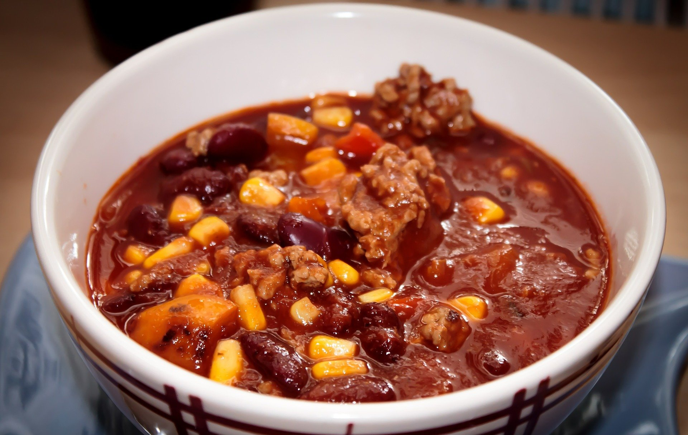

Chili con carne

Home
Chili con carne nella ricetta messicana
Texano o messicano? Il chili con carne si può definire a pieno titolo una
ricetta tex-mex che pare si sia diffusa nel Sud degli Stati Uniti grazie alle
cosiddette chili queens, donne di origine ispanica che preparavano in casa
questo gustoso stufato piccante per poi venderlo a lavoratori, soldati e
cowboys.
In origine il chili prevedeva solo carne e peperoncino, proprio come dice il
nome, tuttavia al giorno d’oggi viene comunemente arricchito con fagioli,
peperoni e pomodoro. Noi abbiamo scelto di proporvi questa variante,
apprezzata in tutto il mondo per la facilità della preparazione, il gusto
deciso e la sua grande versatilità.
Potete servire il chili con carne con riso bianco, tortillas e avocado per una
cena in stile messicano, oppure con cheddar, patate fritte e panna acida come
piace agli americani, o ancora come ripieno del più classico dei burrito… in
ogni caso siamo certi che lo adorerete!
Ingredienti
- Manzo macinato 800 g
- Peperoni rossi 250 g
- Brodo di carne 360 g
- Pepe nero q.b.
- Cipolle rosse (circa 1) 100 g
- Peperoncino fresco 1
- Fagioli neri precotti (peso non sgocciolato) 1170 g
- Passata di pomodoro 500 g
- Zucchero di canna 1 cucchiaino
- Sale fino 2 cucchiaini
- Cipolle bianche (circa 2) 160 g
- Olio extravergine d'oliva 30 g
- Coriandolo in polvere 1 cucchiaino
Steps
-
Per realizzare il chili con carne, per prima cosa preparate il brodo di
carne seguendo la nostra ricetta e tenetelo in caldo. Passate alla
preparazione degli ingredienti: mondate e tritate gli spicchi d’aglio, la
cipolla rossa e quella bianca.
-
Condite con un cucchiaino di sale e rosolate a fuoco medio-alto per una
decina di minuti, sfumando con un mestolo di brodo. Una volta rosolata,
trasferite la carne in una ciotola e tenete da parte.
-
Nella stessa casseruola versate l’olio rimanente e aggiungete il
peperoncino, l’aglio e le cipolle.
-
Unite anche i peperoni e insaporite con un cucchiaino di sale, il pepe e lo
zucchero di canna.
-
Aggiungete anche il cumino e il coriandolo in polvere. Alzate la fiamma e
sfumate con un mestolo di brodo, poi cuocete le verdure a fiamma medio-alta
per un totale di 10 minuti. A questo punto, unite la carne macinata rosolata
in precedenza.
-
Versate la passata di pomodoro e il brodo rimanente. Lasciate sobbollire a
fuoco medio per 60 minuti, mescolando di tanto in tanto e controllando che
non si asciughi troppo; l'andamento della cottura dipende dal tipo di
pentola per cui dovrete regolarvi in base alla casseruola utilizzata.
-
Trascorso questo tempo, aggiungete i fagioli con circa 470 g del loro
liquido di conservazione e lasciate sobbollire per altri 40 minuti, a fuoco
medio-basso. Una volta pronto, togliete la casseruola dal fornello e
lasciate riposare per una decina di minuti. Guarnite con qualche fogliolina
di coriandolo e servite il vostro chili con carne ancora caldo!